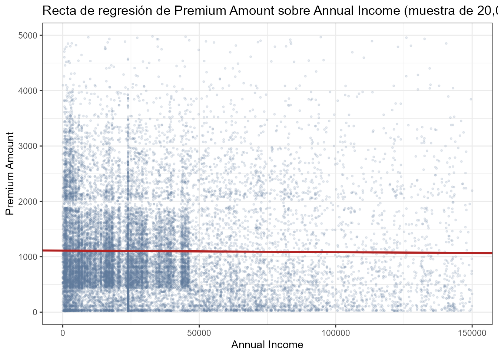
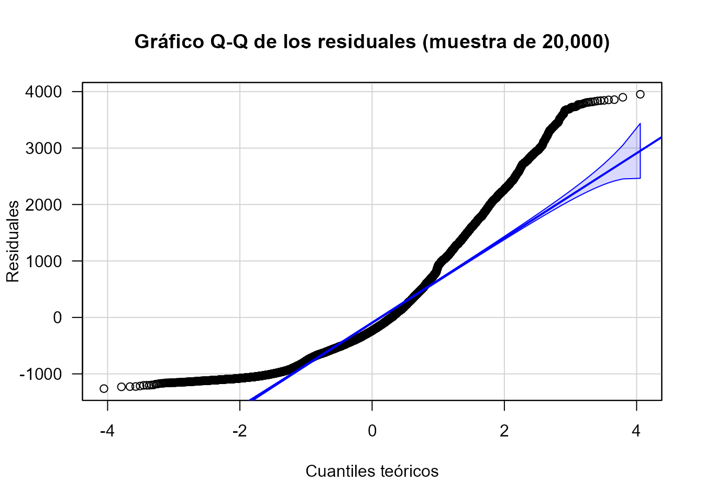
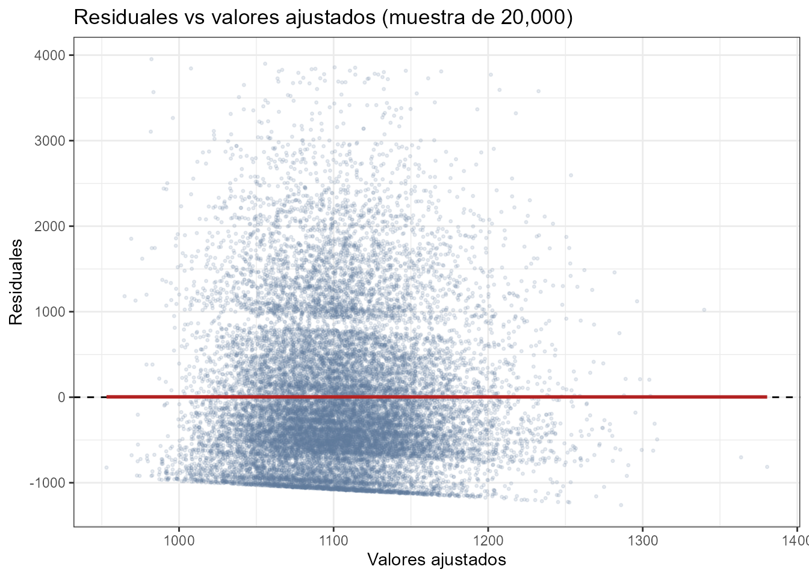
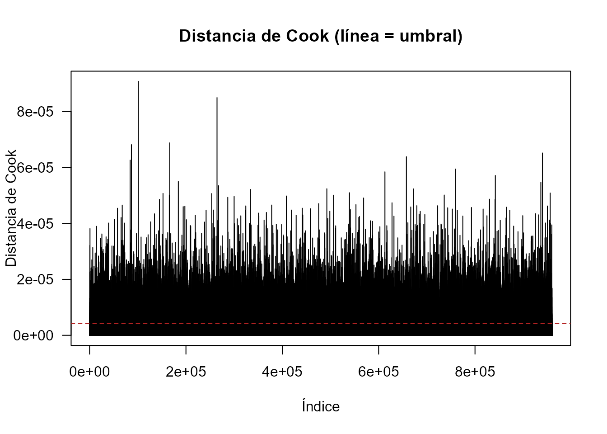
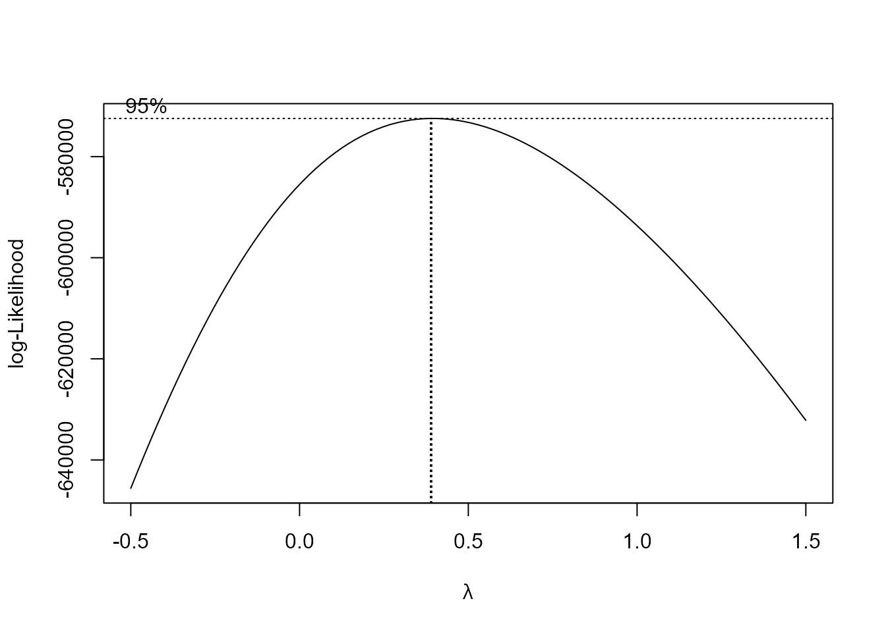
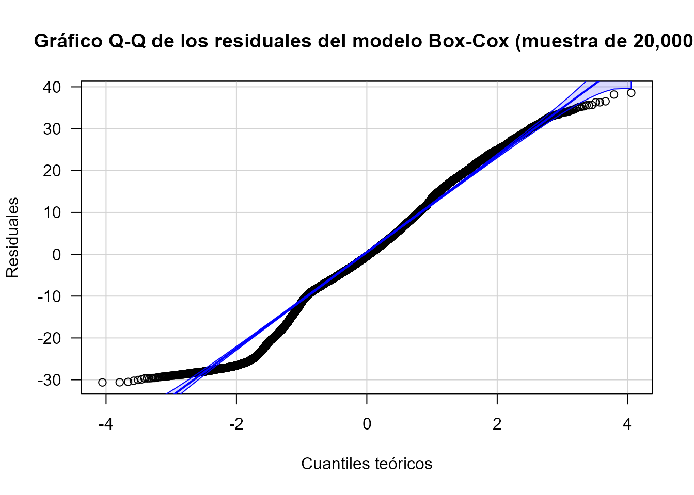
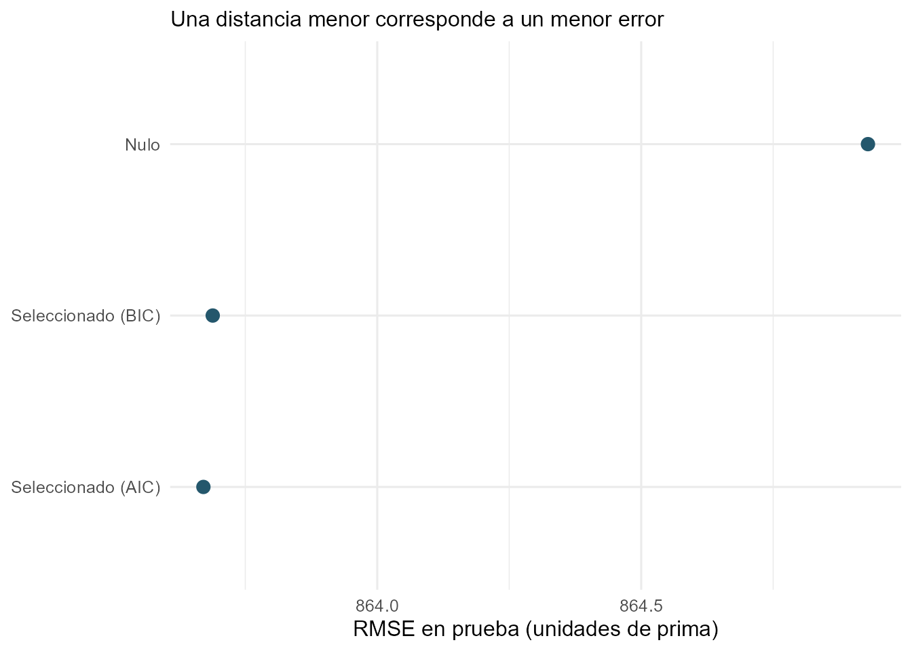

Capítulo 4 Modelo de regresión lineal múltiple
En el capítulo anterior se evaluó la relación de cada variable predictora con Premium Amount de forma individual, y ninguna presentó una asociación relevante en la práctica. En este capítulo se ajusta un modelo de regresión lineal múltiple (RLM), que considera todas las variables predictoras de forma simultánea, con el fin de determinar si en conjunto logran explicar una proporción relevante de la variabilidad de Premium Amount y de identificar cuál es el mejor modelo.
El modelo de RLM con \(k\) regresores se expresa como:
\[ y_i = \beta_0 + \beta_1 x_{i1} + \beta_2 x_{i2} + \cdots + \beta_k x_{ik} + \varepsilon_i, \qquad \varepsilon_i \sim N(0, \sigma^2), \qquad i = 1, \dots, n \]
donde \(\beta_0\) es el intercepto, \(\beta_j\) mide la influencia de la variable \(x_j\) sobre la respuesta manteniendo constantes las demás, y \(\varepsilon_i\) es el error aleatorio. Los coeficientes se estiman por mínimos cuadrados ordinarios:
\[ \hat{\boldsymbol{\beta}} = (\mathbf{X}'\mathbf{X})^{-1}\mathbf{X}'\mathbf{y} \]
4.1 Preparación de los datos
El análisis predictivo parte del CSV original, independientemente de la imputación descriptiva de los capítulos anteriores. Se excluyen id (identificador) y Policy Start Date (fecha), y los predictores categóricos se codifican con una categoría de referencia. La partición externa 80/20 se realiza antes de calcular la imputación. Las medianas, modas y niveles se estiman en cada conjunto de ajuste; Occupation conserva «No especificado».
source("evaluacion.R")
datos_modelo <- as.data.frame(data.table::fread("data/train.csv", na.strings = c("", "NA")))
names(datos_modelo) <- gsub(" ", "_", names(datos_modelo), fixed = TRUE)
datos_modelo <- dplyr::select(datos_modelo, -id, -Policy_Start_Date)
set.seed(123)
idx_train <- sample(nrow(datos_modelo), size = round(0.8 * nrow(datos_modelo)))
datos_entrenamiento <- datos_modelo[idx_train, ]
particion <- preparar_particion(datos_entrenamiento, datos_modelo[-idx_train, ])
train <- particion$ajuste
test <- particion$evaluacion
rm(datos_modelo, particion)
fac_vars <- names(train)[sapply(train, is.factor)]
num_vars <- setdiff(names(train)[sapply(train, is.numeric)], "Premium_Amount")
n_dummies <- sum(sapply(fac_vars, function(v) nlevels(train[[v]]) - 1))Cada variable categórica con \(c\) categorías se representa mediante \(c - 1\) variables dummy, que valen 1 si el cliente pertenece a esa categoría y 0 en otro caso. La categoría restante actúa como base o referencia, y cada coeficiente asociado a una dummy se interpreta como la diferencia en la prima promedio respecto a esa categoría base.
tibble(Variable = gsub("_", " ", fac_vars),
`Categoría base` = sapply(fac_vars, function(v) levels(train[[v]])[1]),
`Variables dummy` = sapply(fac_vars, function(v) nlevels(train[[v]]) - 1)) %>%
tabla_rlm("Codificación de las variables categóricas en variables dummy")| Variable | Categoría base | Variables dummy |
|---|---|---|
| Gender | Female | 1 |
| Marital Status | Divorced | 2 |
| Education Level | Bachelor’s | 3 |
| Occupation | Employed | 3 |
| Location | Rural | 2 |
| Policy Type | Basic | 2 |
| Customer Feedback | Average | 2 |
| Smoking Status | No | 1 |
| Exercise Frequency | Daily | 3 |
| Property Type | Apartment | 2 |
Las 10 variables categóricas generan en total 21 variables dummy que, junto con las 8 variables numéricas y el intercepto, dan un total de \(p = 30\) parámetros en el modelo completo.
El conjunto de entrenamiento contiene 960,000 registros y el conjunto de prueba contiene 240,000. Se comparan cinco procedimientos mediante validación cruzada de cinco pliegues dentro del entrenamiento. En cada pliegue se vuelven a calcular la imputación, la codificación, los coeficientes y la selección por AIC o BIC. El criterio predictivo se decide por RMSE de validación; se conserva BIC como modelo interpretable por su penalización más fuerte.
4.2 Regresión lineal simple como punto de partida
Antes de ajustar el modelo múltiple, se ajusta un modelo de regresión lineal simple (RLS) con Annual Income, que en el capítulo anterior fue la variable numérica con mayor correlación con Premium Amount (\(\rho_s = -0.0598\)). El modelo se expresa como:
\[ y_i = \beta_0 + \beta_1 x_i + \varepsilon_i, \qquad \varepsilon_i \sim N(0, \sigma^2) \]
donde \(y_i\) es Premium Amount y \(x_i\) es Annual Income. Para evaluar si el ingreso anual tiene un efecto lineal sobre la prima se plantea:
\[ \begin{aligned} H_0 &: \beta_1 = 0 \quad \text{(Annual Income no tiene efecto lineal sobre la prima)} \\ H_1 &: \beta_1 \neq 0 \quad \text{(Annual Income tiene efecto lineal sobre la prima)} \end{aligned} \]
modelo_rls <- lm(Premium_Amount ~ Annual_Income, data = train)
tabla_coef(modelo_rls, "Coeficientes estimados del modelo de regresión lineal simple e intervalos de confianza del 95%")| Término | Estimación | Error estándar HC1 | \(t\) | p valor | IC 2.5% | IC 97.5% |
|---|---|---|---|---|---|---|
| (Intercept) | 1,112.1378 | 1.2648 | 879.3025 | < 0.001 | 1,109.6588 | 1,114.6168 |
| Annual_Income | -0.0002868 | 0.00003207 | -8.9424 | < 0.001 | -0.0003497 | -0.000224 |
s_rls <- summary(modelo_rls)
b_rls <- coef(modelo_rls)
t_b1 <- coef(s_rls)[2, "t value"]
p_b1 <- coef(s_rls)[2, "Pr(>|t|)"]
r2_rls <- s_rls$r.squaredset.seed(123)
idx_rls <- sample(nrow(train), 20000)
ggplot(train[idx_rls, ], aes(x = Annual_Income, y = Premium_Amount)) +
geom_point(color = "#5B7C99", alpha = 0.15, size = 0.6) +
geom_abline(intercept = b_rls[1], slope = b_rls[2], color = "#B22222", linewidth = 1) +
labs(title = "Recta de regresión de Premium Amount sobre Annual Income (muestra de 20,000)",
x = "Annual Income", y = "Premium Amount")
El modelo estimado es:
\[ \widehat{\text{Premium Amount}} = 1112.14 - 0.0002868\,\text{Annual Income} \]
Con una confianza del 95%, la prueba t indica que Annual Income tiene un efecto lineal estadísticamente significativo sobre la prima (\(t = -10.27\), p valor \(< 0.001\)), por lo que se rechaza \(H_0\). Según el coeficiente estimado, por cada 1,000 unidades adicionales de ingreso anual la prima promedio disminuye en 0.29. Sin embargo, el coeficiente de determinación es \(R^2 = 0.0001\), es decir, el ingreso anual explica apenas el 0.01% de la variabilidad de Premium Amount. En el gráfico se observa que la recta es casi horizontal frente a la gran dispersión de los puntos.
rmse_nulo <- sqrt(mean((test$Premium_Amount - mean(train$Premium_Amount))^2))
rmse_rls <- sqrt(mean((test$Premium_Amount - predict(modelo_rls, test))^2))En el conjunto de prueba, el modelo simple tiene un \(RMSE = 864.90\), frente a 864.93 del modelo que predice el promedio para todos los clientes, una reducción de apenas el 0.00%. Como una sola variable explica menos del 1% de la variabilidad de la prima, a continuación se ajusta un modelo de regresión lineal múltiple que incorpora todas las variables predictoras.
4.3 Modelo completo
Se ajusta primero el modelo completo, con las 18 variables predictoras:
4.3.1 Prueba de significancia global
La prueba de significancia global determina si existe una relación lineal entre Premium Amount y al menos una de las variables regresoras:
\[ \begin{aligned} H_0 &: \beta_1 = \beta_2 = \cdots = \beta_k = 0 \\ H_1 &: \beta_j \neq 0 \quad \text{para al menos una } j \end{aligned} \]
El estadístico de prueba es \(F_0 = \dfrac{SSR/k}{SSE/(n-k-1)} = \dfrac{MSR}{MSE}\), que bajo \(H_0\) sigue una distribución \(F_{k,\, n-k-1}\). Se construye la tabla ANOVA a partir de la descomposición \(SST = SSR + SSE\):
y_tr <- train$Premium_Amount
n <- nrow(train)
p <- length(coef(modelo_full))
k <- p - 1
SST <- sum((y_tr - mean(y_tr))^2)
SSE <- sum(residuals(modelo_full)^2)
SSR <- SST - SSE
MSR <- SSR / k
MSE <- SSE / (n - p)
F0 <- MSR / MSE
p_F <- pf(F0, k, n - p, lower.tail = FALSE)
tibble(`Fuente de variación` = c("Regresión", "Residuales", "Total"),
`Suma de cuadrados` = c(SSR, SSE, SST),
gl = c(k, n - p, n - 1),
`Cuadrado medio` = c(MSR, MSE, NA),
`$F_0$` = c(F0, NA, NA),
`p valor` = c(p_F, NA, NA)) %>%
tabla_rlm("Tabla ANOVA del modelo completo", p_cols = "p valor")| Fuente de variación | Suma de cuadrados | gl | Cuadrado medio | \(F_0\) | p valor |
|---|---|---|---|---|---|
| Regresión | 2,007,317,882.8408 | 29 | 69,217,858.0290 | 92.7624 | < 0.001 |
| Residuales | 716,314,915,247.9230 | 959,970 | 746,184.6883 | ||
| Total | 718,322,233,130.7638 | 959,999 |
Con una confianza del 95%, la prueba F global indica que al menos una de las variables predictoras contribuye de manera significativa al modelo (\(F_{29,\, 959,970} = 92.76\), p valor \(< 0.001\)), por lo que se rechaza \(H_0\).
Sin embargo, el coeficiente de determinación es \(R^2 = 0.0028\) y el ajustado es \(R^2_{aj} = 0.0028\), es decir, el modelo completo explica apenas el 0.28% de la variabilidad de Premium Amount. Al igual que en el capítulo anterior, con un tamaño de muestra tan grande la prueba F detecta efectos muy pequeños, pero la capacidad explicativa del modelo es prácticamente nula.
4.3.2 Pruebas individuales e intervalos de confianza
Para cada coeficiente se plantea:
\[ \begin{aligned} H_0 &: \beta_j = 0 \\ H_1 &: \beta_j \neq 0 \end{aligned} \]
Los intervalos del 95 % y los valores p usan errores estándar robustos HC1. Las pruebas F clásicas se muestran como parte del ejercicio de mínimos cuadrados y su calibración depende de los supuestos del modelo. Los intervalos del modelo seleccionado son exploratorios porque no incorporan incertidumbre por selección de variables.
cov_full <- sandwich::vcovHC(modelo_full, type = "HC1")
tabla_coef(modelo_full, "Coeficientes del modelo completo e IC robustos del 95%", cov_full) %>%
scroll_box(height = "450px")| Término | Estimación | Error estándar HC1 | \(t\) | p valor | IC 2.5% | IC 97.5% |
|---|---|---|---|---|---|---|
| (Intercept) | 1,174.0124 | 7.2445 | 162.0550 | < 0.001 | 1,159.8134 | 1,188.2115 |
| Age | -0.1271 | 0.06562 | -1.9374 | 0.0527 | -0.2558 | 0.001481 |
| GenderMale | -1.3196 | 1.7633 | -0.7483 | 0.4543 | -4.7757 | 2.1365 |
| Annual_Income | -0.0004818 | 0.00003286 | -14.6622 | < 0.001 | -0.0005462 | -0.0004174 |
| Marital_StatusMarried | -0.401 | 2.1770 | -0.1842 | 0.8539 | -4.6679 | 3.8659 |
| Marital_StatusSingle | 5.1349 | 2.1542 | 2.3837 | 0.0171 | 0.9127 | 9.3570 |
| Number_of_Dependents | -0.4962 | 0.6514 | -0.7616 | 0.4463 | -1.7730 | 0.7807 |
| Education_LevelHigh School | 3.5725 | 2.5115 | 1.4224 | 0.1549 | -1.3500 | 8.4949 |
| Education_LevelMaster’s | 0.1623 | 2.4806 | 0.06544 | 0.9478 | -4.6996 | 5.0243 |
| Education_LevelPhD | -2.2328 | 2.4758 | -0.9018 | 0.3671 | -7.0854 | 2.6198 |
| OccupationNo especificado | -13.3215 | 2.4206 | -5.5034 | < 0.001 | -18.0658 | -8.5773 |
| OccupationSelf-Employed | -0.2157 | 2.5766 | -0.0837 | 0.9333 | -5.2657 | 4.8344 |
| OccupationUnemployed | -3.5806 | 2.5834 | -1.3860 | 0.1657 | -8.6439 | 1.4827 |
| Health_Score | 1.0422 | 0.07542 | 13.8180 | < 0.001 | 0.8944 | 1.1900 |
| LocationSuburban | 0.9276 | 2.1563 | 0.4302 | 0.6671 | -3.2987 | 5.1538 |
| LocationUrban | 2.4307 | 2.1615 | 1.1246 | 0.2608 | -1.8057 | 6.6671 |
| Policy_TypeComprehensive | 0.3791 | 2.1623 | 0.1753 | 0.8608 | -3.8590 | 4.6172 |
| Policy_TypePremium | -1.1022 | 2.1574 | -0.5109 | 0.6094 | -5.3306 | 3.1262 |
| Previous_Claims | 42.8161 | 1.1034 | 38.8026 | < 0.001 | 40.6534 | 44.9788 |
| Vehicle_Age | 0.03283 | 0.1529 | 0.2147 | 0.8300 | -0.2669 | 0.3326 |
| Credit_Score | -0.1757 | 0.00636 | -27.6290 | < 0.001 | -0.1882 | -0.1633 |
| Insurance_Duration | -0.1628 | 0.34 | -0.4788 | 0.6321 | -0.8291 | 0.5036 |
| Customer_FeedbackGood | -15.1685 | 2.1390 | -7.0915 | < 0.001 | -19.3608 | -10.9762 |
| Customer_FeedbackPoor | -11.8883 | 2.1302 | -5.5809 | < 0.001 | -16.0634 | -7.7132 |
| Smoking_StatusYes | -0.1451 | 1.7633 | -0.08226 | 0.9344 | -3.6011 | 3.3110 |
| Exercise_FrequencyMonthly | -1.2946 | 2.5085 | -0.5161 | 0.6058 | -6.2111 | 3.6219 |
| Exercise_FrequencyRarely | -0.7251 | 2.5038 | -0.2896 | 0.7721 | -5.6324 | 4.1823 |
| Exercise_FrequencyWeekly | -2.7931 | 2.4900 | -1.1218 | 0.2620 | -7.6734 | 2.0871 |
| Property_TypeCondo | -2.8406 | 2.1636 | -1.3129 | 0.1892 | -7.0812 | 1.3999 |
| Property_TypeHouse | -2.5386 | 2.1576 | -1.1766 | 0.2394 | -6.7673 | 1.6902 |
coef_full <- coef_robustos(modelo_full, cov_full)[-1, ]
sig_full <- coef_full$term[coef_full$p.value < 0.05]Con una confianza del 95%, de los 29 coeficientes asociados a las variables predictoras, 8 resultan estadísticamente significativos (Annual Income, Marital Status = Single, Occupation = No especificado, Health Score, Previous Claims, Credit Score, Customer Feedback = Good, Customer Feedback = Poor), ya que su p valor es menor a \(0.05\) y su intervalo de confianza no contiene al 0. Los demás coeficientes no son significativos, lo que sugiere que esas variables podrían eliminarse del modelo.
4.3.3 Análisis de multicolinealidad
Antes de seleccionar variables, se verifica que no exista multicolinealidad, es decir, que ninguna variable predictora pueda expresarse como combinación lineal de las demás. Como el modelo incluye variables categóricas con varias dummies, se usa el factor de inflación de varianza generalizado (GVIF). El valor \(GVIF^{1/(2\,gl)}\) es comparable entre variables con distinto número de dummies, y el criterio \(VIF > 5\) equivale a \(GVIF^{1/(2\,gl)} > \sqrt{5} \approx 2.24\).
vif_full <- car::vif(modelo_full)
tabla_vif <- as.data.frame(vif_full) %>%
tibble::rownames_to_column("Variable") %>%
mutate(Variable = gsub("_", " ", Variable))
names(tabla_vif) <- c("Variable", "GVIF", "gl", "$GVIF^{1/(2\\,gl)}$")
tabla_vif %>% tabla_rlm("Factor de inflación de varianza generalizado del modelo completo")| Variable | GVIF | gl | \(GVIF^{1/(2\,gl)}\) |
|---|---|---|---|
| Age | 1.0000 | 1 | 1.0000 |
| Gender | 1.0001 | 1 | 1.0000 |
| Annual Income | 1.0367 | 1 | 1.0182 |
| Marital Status | 1.0001 | 2 | 1.0000 |
| Number of Dependents | 1.0001 | 1 | 1.0000 |
| Education Level | 1.0002 | 3 | 1.0000 |
| Occupation | 1.0003 | 3 | 1.0000 |
| Health Score | 1.0009 | 1 | 1.0005 |
| Location | 1.0001 | 2 | 1.0000 |
| Policy Type | 1.0001 | 2 | 1.0000 |
| Previous Claims | 1.0026 | 1 | 1.0013 |
| Vehicle Age | 1.0001 | 1 | 1.0000 |
| Credit Score | 1.0356 | 1 | 1.0176 |
| Insurance Duration | 1.0000 | 1 | 1.0000 |
| Customer Feedback | 1.0005 | 2 | 1.0001 |
| Smoking Status | 1.0000 | 1 | 1.0000 |
| Exercise Frequency | 1.0002 | 3 | 1.0000 |
| Property Type | 1.0002 | 2 | 1.0000 |
Además, se calcula el número de condición (ICN) de la matriz de diseño. Como las variables tienen escalas muy distintas (por ejemplo, Annual Income llega a 150,000 y las dummies solo valen 0 o 1), el ICN se calcula sobre las columnas estandarizadas, ya que de lo contrario reflejaría la diferencia de escalas y no la dependencia entre variables.
X_std <- scale(model.matrix(modelo_full)[, -1])
icn <- kappa(X_std, exact = TRUE)
rm(X_std); invisible(gc())El mayor valor de \(GVIF^{1/(2\,gl)}\) es \(1.0182\), muy por debajo de \(2.24\), y el número de condición es \(ICN = 2.18\), menor a 30. Por lo tanto, se concluye que no existe multicolinealidad entre las variables predictoras, lo cual es coherente con la matriz de correlación del EDA, donde ningún par de variables numéricas superaba \(|\rho_s| = 0.133\).
4.4 Selección de variables
El método de todas las regresiones posibles requeriría ajustar \(2^{18} - 1 = 262{,}143\) modelos sobre 960,000 observaciones, lo cual no es viable computacionalmente. Por ello se usa la selección secuencial con los métodos forward, backward y stepwise.
Como criterio se usa principalmente el BIC, \(BIC = n\ln(SSE/n) + p\ln n\), ya que penaliza más la inclusión de variables cuando el tamaño de muestra es grande: con \(n\) cercano a un millón, el AIC tiende a conservar variables que, aunque mejoran un poco el ajuste, no aportan en la práctica. Para comparar, se incluye también el método stepwise con el AIC. En stepAIC(), el BIC se obtiene con el argumento k = log(n).
Estos ajustes sobre todo el entrenamiento describen la selección de variables. La evaluación del procedimiento de selección se realizó por separado y de nuevo en cada pliegue.
modelo_nulo <- lm(Premium_Amount ~ 1, data = train)
k_bic <- log(nrow(train))
alcance <- list(lower = modelo_nulo, upper = modelo_full)
# Método forward (BIC)
sel_forward <- MASS::stepAIC(modelo_nulo, scope = alcance, direction = "forward",
k = k_bic, trace = FALSE)
# Método backward (BIC)
sel_backward <- MASS::stepAIC(modelo_full, direction = "backward",
k = k_bic, trace = FALSE)
# Método stepwise (BIC)
sel_both <- MASS::stepAIC(modelo_nulo, scope = alcance, direction = "both",
k = k_bic, trace = FALSE)
# Método stepwise (AIC), para comparar
sel_aic <- MASS::stepAIC(modelo_nulo, scope = alcance, direction = "both",
k = 2, trace = FALSE)sel <- list("Forward (BIC)" = sel_forward, "Backward (BIC)" = sel_backward,
"Stepwise (BIC)" = sel_both, "Stepwise (AIC)" = sel_aic)
tibble(`Método` = names(sel),
`Número de variables` = sapply(sel, function(m) length(vars_de(m))),
Variables = sapply(sel, function(m) paste(gsub("_", " ", sort(vars_de(m))), collapse = ", ")),
AIC = sapply(sel, AIC),
BIC = sapply(sel, BIC)) %>%
tabla_rlm("Modelos obtenidos con la selección secuencial", align = "lclcc")| Método | Número de variables | Variables | AIC | BIC |
|---|---|---|---|---|
| Forward (BIC) | 6 | Annual Income, Credit Score, Customer Feedback, Health Score, Occupation, Previous Claims | 15,706,197.4497 | 15,706,326.9713 |
| Backward (BIC) | 6 | Annual Income, Credit Score, Customer Feedback, Health Score, Occupation, Previous Claims | 15,706,197.4497 | 15,706,326.9713 |
| Stepwise (BIC) | 6 | Annual Income, Credit Score, Customer Feedback, Health Score, Occupation, Previous Claims | 15,706,197.4497 | 15,706,326.9713 |
| Stepwise (AIC) | 8 | Age, Annual Income, Credit Score, Customer Feedback, Health Score, Marital Status, Occupation, Previous Claims | 15,706,191.3789 | 15,706,356.2245 |
mismas_bic <- identical(sort(vars_de(sel_forward)), sort(vars_de(sel_backward))) &&
identical(sort(vars_de(sel_forward)), sort(vars_de(sel_both)))
modelo_bic <- sel_both
vars_bic <- vars_de(modelo_bic)
vars_elim <- setdiff(vars_de(modelo_full), vars_bic)
vars_aic <- vars_de(sel_aic)
rm(sel_forward, sel_backward, sel); invisible(gc())Los tres métodos con el criterio BIC (forward, backward y stepwise) coinciden en el mismo modelo, que incluye 6 variables: Previous Claims, Credit Score, Annual Income, Health Score, Customer Feedback, Occupation. Las 12 variables eliminadas son: Age, Gender, Marital Status, Number of Dependents, Education Level, Location, Policy Type, Vehicle Age, Insurance Duration, Smoking Status, Exercise Frequency, Property Type. Por su parte, el método stepwise con el AIC conserva 8 variables, más que con el BIC, como era de esperarse por su menor penalización.
Para verificar si las variables eliminadas aportan al modelo, se compara el modelo seleccionado (reducido) con el completo mediante la prueba F parcial:
\[ \begin{aligned} H_0 &: \text{los coeficientes de las variables eliminadas son todos iguales a 0} \\ H_1 &: \text{al menos uno de esos coeficientes es distinto de 0} \end{aligned} \qquad F = \frac{(SSE_{\text{reduc}} - SSE_{\text{full}})/(p_{\text{full}} - p_{\text{reduc}})}{SSE_{\text{full}}/(n - p_{\text{full}})} \]
| Res.Df | RSS | Df | Sum of Sq | F | Pr(>F) | |
|---|---|---|---|---|---|---|
| 1 | 959,990 | 716,332,960,066.2976 | ||||
| 2 | 959,970 | 716,314,915,247.9230 | 20 | 18,044,818.3746 | 1.2091 | 0.2345 |
Con una confianza del 95%, la prueba F parcial indica que las variables eliminadas no aportan de forma estadísticamente significativa al modelo (\(F = 1.2091\), p valor \(= 0.2345\)), por lo que no se rechaza \(H_0\). Esto respalda el uso del modelo reducido, que es más simple y explica prácticamente lo mismo que el modelo completo.
Los coeficientes del modelo seleccionado son:
tabla_coef(modelo_bic, "Coeficientes estimados del modelo seleccionado por BIC e intervalos de confianza del 95%")| Término | Estimación | Error estándar HC1 | \(t\) | p valor | IC 2.5% | IC 97.5% |
|---|---|---|---|---|---|---|
| (Intercept) | 1,166.4423 | 5.0832 | 229.4716 | < 0.001 | 1,156.4794 | 1,176.4051 |
| Previous_Claims | 42.8214 | 1.1034 | 38.8086 | < 0.001 | 40.6588 | 44.9841 |
| Credit_Score | -0.1758 | 0.00636 | -27.6390 | < 0.001 | -0.1882 | -0.1633 |
| Annual_Income | -0.0004813 | 0.00003286 | -14.6498 | < 0.001 | -0.0005457 | -0.0004169 |
| Health_Score | 1.0412 | 0.07542 | 13.8058 | < 0.001 | 0.8934 | 1.1891 |
| Customer_FeedbackGood | -15.2023 | 2.1389 | -7.1076 | < 0.001 | -19.3944 | -11.0102 |
| Customer_FeedbackPoor | -11.9121 | 2.1302 | -5.5921 | < 0.001 | -16.0871 | -7.7370 |
| OccupationNo especificado | -13.3319 | 2.4205 | -5.5079 | < 0.001 | -18.0761 | -8.5878 |
| OccupationSelf-Employed | -0.1906 | 2.5765 | -0.07399 | 0.9410 | -5.2405 | 4.8592 |
| OccupationUnemployed | -3.5698 | 2.5833 | -1.3819 | 0.1670 | -8.6329 | 1.4933 |
El modelo seleccionado tiene \(R^2 = 0.0028\) y \(R^2_{aj} = 0.0028\), prácticamente iguales a los del modelo completo (\(R^2_{aj} = 0.0028\)), pero con 20 parámetros menos.
4.5 Análisis de residuales
A continuación se validan los supuestos del modelo seleccionado: independencia, normalidad, media cero y varianza constante de los errores. Además, se identifican observaciones atípicas e influyentes. Para los gráficos se usa una muestra aleatoria de 20,000 residuales, ya que con cerca de un millón de puntos los gráficos se saturan; las pruebas sí se calculan con todos los residuales.
res_bic <- residuals(modelo_bic)
aj_bic <- fitted(modelo_bic)
set.seed(123)
idx_graf <- sample(length(res_bic), 20000)4.5.1 Independencia de los errores
\[ \begin{aligned} H_0 &: \text{los errores son independientes (no hay autocorrelación)} \\ H_1 &: \text{los errores están autocorrelacionados} \end{aligned} \]
| Prueba | Datos | DW | p valor |
|---|---|---|---|
| Durbin-Watson test | modelo_bic | 1.9982 | 0.3756 |
Con una confianza del 95%, la prueba de Durbin-Watson indica que no hay evidencia de autocorrelación en los errores (\(DW = 1.9982\), p valor \(= 0.3756\)), por lo que se cumple el supuesto de independencia. Un valor de \(DW\) cercano a 2 indica ausencia de autocorrelación.
4.5.2 Normalidad de los errores
\[ \begin{aligned} H_0 &: \text{los errores siguen una distribución normal} \\ H_1 &: \text{los errores no siguen una distribución normal} \end{aligned} \]
La prueba de Shapiro-Wilk solo admite hasta 5,000 observaciones, por lo que se usa la prueba de Lilliefors, igual que en el capítulo anterior.
| Prueba | Datos | D | p valor |
|---|---|---|---|
| Lilliefors (Kolmogorov-Smirnov) normality test | res_bic | 0.1149 | < 0.001 |
car::qqPlot(res_bic[idx_graf], las = 1, id = FALSE,
xlab = "Cuantiles teóricos", ylab = "Residuales",
main = "Gráfico Q-Q de los residuales (muestra de 20,000)")
Con una confianza del 95%, la prueba de Lilliefors indica que los residuales no siguen una distribución normal (\(D = 0.11494\), p valor \(< 0.001\)). En el gráfico Q-Q se observa que los puntos se alejan de la línea de referencia en la cola derecha, reflejo del sesgo hacia la derecha de Premium Amount que ya se había identificado en el EDA.
4.5.3 Media cero de los errores
\[ \begin{aligned} H_0 &: E(\varepsilon) = 0 \\ H_1 &: E(\varepsilon) \neq 0 \end{aligned} \]
| Prueba | Datos | mean of x | t | gl | p valor |
|---|---|---|---|---|---|
| One Sample t-test | res_bic | 0.000000000000008186 | 0.000000000000009285 | 959,999 | 1.0000 |
Con una confianza del 95%, no hay evidencia para afirmar que la media de los residuales sea distinta de cero (p valor \(= 1.0000\)). Esto es esperable, ya que en un modelo con intercepto ajustado por mínimos cuadrados los residuales siempre suman cero.
4.5.4 Varianza constante de los errores
\[ \begin{aligned} H_0 &: \text{la varianza de los errores es constante (homocedasticidad)} \\ H_1 &: \text{la varianza de los errores no es constante (heterocedasticidad)} \end{aligned} \]
| Prueba | Datos | BP | gl | p valor |
|---|---|---|---|---|
| studentized Breusch-Pagan test | modelo_bic | 8,114.5633 | 9 | < 0.001 |
tibble(ajustado = aj_bic[idx_graf], residuo = res_bic[idx_graf]) %>%
ggplot(aes(x = ajustado, y = residuo)) +
geom_point(color = "#5B7C99", alpha = 0.15, size = 0.6) +
geom_hline(yintercept = 0, linetype = "dashed") +
geom_smooth(se = FALSE, color = "#B22222") +
labs(title = "Residuales vs valores ajustados (muestra de 20,000)",
x = "Valores ajustados", y = "Residuales")
Con una confianza del 95%, la prueba de Breusch-Pagan indica que la varianza de los errores no es constante (\(BP = 8114.56\), gl \(= 9\), p valor \(< 0.001\)), por lo que no se cumple el supuesto de homocedasticidad. En el gráfico de residuales vs valores ajustados se observa que los valores ajustados ocupan un rango muy estrecho comparado con el de los residuales, lo que refleja que el modelo predice casi el mismo valor para todos los clientes. Además, los residuales son asimétricos, con una cola larga de valores positivos.
4.5.5 Identificación de outliers
Una observación se considera atípica si su residual estudentizado \(r_i\) está fuera del intervalo \((-3, 3)\). Adicionalmente, se aplica la prueba de Bonferroni sobre el mayor residual estudentizado.
r_est <- rstudent(modelo_bic)
n_out <- sum(abs(r_est) > 3)
esperados <- 2 * pnorm(-3) * length(r_est)
ot <- car::outlierTest(modelo_bic, n.max = 5)
tibble(`Observación` = names(ot$rstudent),
`Residual estudentizado` = ot$rstudent,
`p valor` = ot$p,
`p Bonferroni` = ot$bonf.p) %>%
tabla_rlm("Prueba de Bonferroni para outliers", p_cols = c("p valor", "p Bonferroni"))| Observación | Residual estudentizado | p valor | p Bonferroni |
|---|---|---|---|
| 20941 | 4.6380 | < 0.001 | 3.3777 |
Se encontraron 12,183 observaciones con \(|r_i| > 3\), el 1.27% del total. Bajo normalidad se esperarían alrededor de 2,592 (el 0.27%) solo por azar, por lo que hay más atípicos de lo esperado, lo cual es coherente con la cola derecha larga de Premium Amount. La prueba de Bonferroni no identifica ninguna observación como outlier.
4.5.6 Identificación de observaciones influyentes
La influencia de cada observación se mide con la distancia de Cook, \(D_i = \dfrac{r_i^2}{p}\dfrac{h_{ii}}{1 - h_{ii}}\), y se considera influyente si \(D_i > \dfrac{4}{n - p - 2}\).
cook <- cooks.distance(modelo_bic)
p_bic <- length(coef(modelo_bic))
umbral <- 4 / (length(cook) - p_bic - 2)
n_infl <- sum(cook > umbral)
plot(cook, type = "h", las = 1, xlab = "Índice", ylab = "Distancia de Cook",
main = "Distancia de Cook (línea = umbral)")
abline(h = umbral, lty = 2, col = "#B22222")
ord <- order(cook, decreasing = TRUE)[1:10]
tibble(`Observación` = names(cook)[ord], `Distancia de Cook` = cook[ord]) %>%
tabla_rlm("Observaciones con mayor distancia de Cook")| Observación | Distancia de Cook |
|---|---|
| 50825 | 0.0000908 |
| 358380 | 0.00008499 |
| 1194641 | 0.00006882 |
| 271082 | 0.00006817 |
| 725843 | 0.00006518 |
| 632118 | 0.00006385 |
| 54981 | 0.00006263 |
| 113802 | 0.00005944 |
| 327551 | 0.00005846 |
| 420795 | 0.00005714 |
Con un tamaño de muestra tan grande, el umbral \(4/(n-p-2) = 4.17e-06\) es muy pequeño, por lo que 52,563 observaciones lo superan. Sin embargo, la mayor distancia de Cook es \(9.08e-05\), muy lejos de 1, por lo que ninguna observación individual controla el modelo: retirar cualquiera de ellas no cambiaría los coeficientes estimados de forma apreciable.
4.6 Transformación de Box-Cox
Dado que los residuales no cumplen los supuestos de normalidad y homocedasticidad, se evalúa la transformación de Box-Cox de la variable respuesta:
\[ y^{(\lambda)} = \begin{cases} \dfrac{y^\lambda - 1}{\lambda}, & \lambda \neq 0 \\ \ln y, & \lambda = 0 \end{cases} \]
donde \(\lambda\) se elige maximizando la verosimilitud del modelo. Para estimar \(\lambda\) se usa una muestra aleatoria de 100,000 observaciones del conjunto de entrenamiento, ya que el procedimiento ajusta el modelo una vez por cada valor de \(\lambda\).
stopifnot(min(train$Premium_Amount) > 0)
set.seed(123)
idx_bc <- sample(nrow(train), 100000)
bc <- MASS::boxcox(formula(modelo_bic), data = train[idx_bc, ],
lambda = seq(-0.5, 1.5, 0.05))
lambda_hat <- bc$x[which.max(bc$y)]
ic_lambda <- range(bc$x[bc$y > max(bc$y) - qchisq(0.95, 1) / 2])
lambda <- round(lambda_hat, 2)El valor de \(\lambda\) que maximiza la verosimilitud es \(\hat\lambda = 0.39\), con un intervalo de confianza del 95% de \((0.39, 0.39)\). Como el intervalo no contiene al 1, se justifica transformar la respuesta. Se ajusta el modelo con las mismas variables del modelo seleccionado y la respuesta transformada con \(\lambda = 0.39\).
bc_trans <- function(y, l) if (abs(l) < 1e-8) log(y) else (y^l - 1) / l
bc_inv <- function(z, l) if (abs(l) < 1e-8) exp(z) else pmax(l * z + 1, 0)^(1 / l)
train$Premium_BC <- bc_trans(train$Premium_Amount, lambda)
modelo_bc <- lm(update(formula(modelo_bic), Premium_BC ~ .), data = train)
train$Premium_BC <- NULL
res_bc <- residuals(modelo_bc)
lil_bc <- lillie.test(res_bc)
lil_bc| Prueba | Datos | D | p valor |
|---|---|---|---|
| Lilliefors (Kolmogorov-Smirnov) normality test | res_bc | 0.0407 | < 0.001 |
| Prueba | Datos | BP | gl | p valor |
|---|---|---|---|---|
| studentized Breusch-Pagan test | modelo_bc | 18,663.1471 | 9 | < 0.001 |
car::qqPlot(res_bc[idx_graf], las = 1, id = FALSE,
xlab = "Cuantiles teóricos", ylab = "Residuales",
main = "Gráfico Q-Q de los residuales del modelo Box-Cox (muestra de 20,000)")
Con la transformación, el estadístico de Lilliefors pasa de \(D = 0.11494\) a \(D = 0.04070\), es decir, los residuales se acercan más a la normalidad, aunque con una confianza del 95% siguen sin cumplir el supuesto (p valor \(< 0.001\)). Por su parte, la prueba de Breusch-Pagan da \(BP = 18663.15\) (p valor \(< 0.001\)), por lo que tampoco se cumple el supuesto de homocedasticidad.
4.7 Comparación de modelos
Se comparan los modelos obtenidos en el conjunto de prueba, que no se usó en el ajuste. Como referencia se incluye el modelo nulo, que predice para todos los clientes el promedio de Premium Amount del conjunto de entrenamiento. Las predicciones del modelo Box-Cox se devuelven a la escala original con la transformación inversa, \(y = (\lambda\, y^{(\lambda)} + 1)^{1/\lambda}\), para que sus errores sean comparables con los de los demás modelos.
Las métricas usadas son la raíz del error cuadrático medio, \(RMSE = \sqrt{\frac{1}{m}\sum (y_i - \hat y_i)^2}\), el error absoluto medio, \(MAE = \frac{1}{m}\sum |y_i - \hat y_i|\), y el \(R^2\) en el conjunto de prueba.
y_te <- test$Premium_Amount
media_tr <- mean(train$Premium_Amount)
pred <- list(
"Nulo" = rep(media_tr, nrow(test)),
"Simple (Annual Income)" = predict(modelo_rls, test),
"Completo" = predict(modelo_full, test),
"Seleccionado (BIC)" = predict(modelo_bic, test),
"Seleccionado (AIC)" = predict(sel_aic, test),
"Box-Cox (BIC)" = bc_inv(predict(modelo_bc, test), lambda)
)
mods <- list(modelo_nulo, modelo_rls, modelo_full, modelo_bic, sel_aic, modelo_bc)
comp <- tibble(
Modelo = names(pred),
p = sapply(mods, function(m) length(coef(m))),
r2aj = sapply(mods, function(m) summary(m)$adj.r.squared),
AIC = c(sapply(mods[1:5], AIC), NA),
BIC = c(sapply(mods[1:5], BIC), NA),
RMSE = sapply(pred, function(pr) sqrt(mean((y_te - pr)^2))),
MAE = sapply(pred, function(pr) mean(abs(y_te - pr))),
r2p = sapply(pred, function(pr) 1 - sum((y_te - pr)^2) / sum((y_te - media_tr)^2))
)
comp %>%
rename(`$p$` = p, `$R^2_{aj}$ (entrenamiento)` = r2aj,
`RMSE (prueba)` = RMSE, `MAE (prueba)` = MAE, `$R^2$ (prueba)` = r2p) %>%
tabla_rlm("Comparación de los modelos ajustados")| Modelo | \(p\) | \(R^2_{aj}\) (entrenamiento) | AIC | BIC | RMSE (prueba) | MAE (prueba) | \(R^2\) (prueba) |
|---|---|---|---|---|---|---|---|
| Nulo | 1 | 0 | 15,708,841.6969 | 15,708,865.2463 | 864.9296 | 668.6135 | 0 |
| Simple (Annual Income) | 2 | 0.0001088 | 15,708,738.2178 | 15,708,773.5419 | 864.9042 | 668.5595 | 0.00005869 |
| Completo | 30 | 0.002764 | 15,706,213.2665 | 15,706,578.2819 | 863.6792 | 667.2948 | 0.002889 |
| Seleccionado (BIC) | 10 | 0.00276 | 15,706,197.4497 | 15,706,326.9713 | 863.6883 | 667.3040 | 0.002868 |
| Seleccionado (AIC) | 13 | 0.002769 | 15,706,191.3789 | 15,706,356.2245 | 863.6707 | 667.2918 | 0.002909 |
| Box-Cox (BIC) | 10 | 0.008176 | 889.9082 | 638.5324 | -0.05859 |
rmse <- setNames(comp$RMSE, comp$Modelo)
mae <- setNames(comp$MAE, comp$Modelo)
r2p <- setNames(comp$r2p, comp$Modelo)
mejora_rmse <- 100 * (1 - rmse["Seleccionado (BIC)"] / rmse["Nulo"])El \(R^2_{aj}\) del modelo Box-Cox está en la escala transformada, por lo que no es directamente comparable con el de los demás; por la misma razón no se reportan su AIC ni su BIC.
4.7.1 Validación cruzada y prueba final
| Modelo | RMSE | MAE | R2 |
|---|---|---|---|
| Nulo | 865.0174 | 669.0210 | 0 |
| Simple (Annual Income) | 864.9712 | 668.9449 | 0.0001069 |
| Completo | 863.8354 | 667.7103 | 0.002731 |
| Seleccionado (BIC) | 863.8436 | 667.7260 | 0.002712 |
| Seleccionado (AIC) | 863.8301 | 667.7085 | 0.002743 |
ganador_cv <- cv$Modelo[which.min(cv$RMSE)]
mejora_cv <- 100 * (1 - min(cv$RMSE) / cv$RMSE[cv$Modelo == "Nulo"])Según la validación cruzada, Seleccionado (AIC) obtuvo el menor RMSE. La reducción frente al promedio fue de 0.14 %. Este criterio se definió antes de examinar los resultados de prueba. Box–Cox se presenta como diagnóstico adicional; no participó en la selección por validación cruzada.
El modelo BIC obtuvo en prueba un RMSE de 863.69, frente a 864.93 del promedio. La mejora fue de 0.14 % y el R² predictivo, medido frente al promedio de entrenamiento, fue 0.0029.
| Modelo | RMSE | MAE | R² de prueba |
|---|---|---|---|
| Nulo | 864.9296 | 668.6135 | 0 |
| Seleccionado (BIC) | 863.6883 | 667.3040 | 0.002868 |
| Seleccionado (AIC) | 863.6707 | 667.2918 | 0.002909 |
Se conserva BIC para la interpretación porque usa 6 predictores frente a 8 de AIC. Las métricas de prueba cuantifican la diferencia real restante; no se usaron para cambiar el procedimiento elegido. Se informa Box–Cox como diagnóstico exploratorio y las predicciones invertidas se comparan en las unidades originales.

4.8 Modelo final
El modelo final ajustado es:
\[ \begin{aligned} \widehat{\text{Premium Amount}} &= 1166.44 + 42.82\,\text{Previous Claims} - 0.1758\,\text{Credit Score} - 0.0004813\,\text{Annual Income} \\ &\quad + 1.041\,\text{Health Score} - 15.2\,\text{Customer Feedback = Good} - 11.91\,\text{Customer Feedback = Poor} \\ &\quad - 13.33\,\text{Occupation = No especificado} - 0.1906\,\text{Occupation = Self-Employed} - 3.57\,\text{Occupation = Unemployed} \end{aligned} \]
La interpretación de cada coeficiente es la siguiente:
coef_fin <- coef_robustos(modelo_final)[-1, ]
tibble(`Término` = sapply(coef_fin$term, etiqueta, datos = train),
`Estimación` = coef_fin$estimate,
`IC 2.5%` = coef_fin$conf.low, `IC 97.5%` = coef_fin$conf.high,
`p valor` = coef_fin$p.value,
`Interpretación` = interpretar(modelo_final, train)) %>%
tabla_rlm("Interpretación de los coeficientes del modelo final",
p_cols = "p valor", align = "lccccl")| Término | Estimación | IC 2.5% | IC 97.5% | p valor | Interpretación |
|---|---|---|---|---|---|
| Previous Claims | 42.8214 | 40.6588 | 44.9841 | < 0.001 | Por cada unidad adicional de Previous Claims, la prima promedio aumenta en 42.82, manteniendo constantes las demás variables. |
| Credit Score | -0.1758 | -0.1882 | -0.1633 | < 0.001 | Por cada unidad adicional de Credit Score, la prima promedio disminuye en 0.1758, manteniendo constantes las demás variables. |
| Annual Income | -0.0004813 | -0.0005457 | -0.0004169 | < 0.001 | Por cada unidad adicional de Annual Income, la prima promedio disminuye en 0.0004813, manteniendo constantes las demás variables. |
| Health Score | 1.0412 | 0.8934 | 1.1891 | < 0.001 | Por cada unidad adicional de Health Score, la prima promedio aumenta en 1.041, manteniendo constantes las demás variables. |
| Customer Feedback = Good | -15.2023 | -19.3944 | -11.0102 | < 0.001 | Los clientes con Customer Feedback = Good pagan en promedio 15.2 menos que los de la categoría base (Average), manteniendo constantes las demás variables. |
| Customer Feedback = Poor | -11.9121 | -16.0871 | -7.7370 | < 0.001 | Los clientes con Customer Feedback = Poor pagan en promedio 11.91 menos que los de la categoría base (Average), manteniendo constantes las demás variables. |
| Occupation = No especificado | -13.3319 | -18.0761 | -8.5878 | < 0.001 | Los clientes con Occupation = No especificado pagan en promedio 13.33 menos que los de la categoría base (Employed), manteniendo constantes las demás variables. |
| Occupation = Self-Employed | -0.1906 | -5.2405 | 4.8592 | 0.9410 | Los clientes con Occupation = Self-Employed pagan en promedio 0.1906 menos que los de la categoría base (Employed), manteniendo constantes las demás variables. |
| Occupation = Unemployed | -3.5698 | -8.6329 | 1.4933 | 0.1670 | Los clientes con Occupation = Unemployed pagan en promedio 3.57 menos que los de la categoría base (Employed), manteniendo constantes las demás variables. |
El intercepto, \(\hat\beta_0 = 1166.44\), representa la prima promedio estimada para un cliente que pertenece a todas las categorías base y cuyas variables numéricas del modelo valen cero; es un valor teórico de referencia, ya que esas condiciones no se presentan en los datos. Aunque los coeficientes anteriores son estadísticamente significativos, sus efectos son muy pequeños en relación con la variabilidad de la prima (desviación estándar de 865.02), lo que explica el bajo \(R^2_{aj} = 0.0028\).
4.9 Inferencia para la respuesta
Como ejemplo, se estima la prima de un cliente con un perfil típico: el valor mediano en cada variable numérica y la categoría más frecuente en cada variable categórica.
moda <- function(x) names(which.max(table(x)))
dato_nuevo <- train %>%
dplyr::select(-Premium_Amount) %>%
summarise(across(where(is.numeric), median),
across(where(is.factor), ~ factor(moda(.x), levels = levels(.x))))
tibble(Variable = gsub("_", " ", names(dato_nuevo)),
Valor = sapply(dato_nuevo, function(x) as.character(x))) %>%
filter(gsub(" ", "_", Variable) %in% vars_bic) %>%
tabla_rlm("Perfil del cliente típico (variables del modelo final)")| Variable | Valor |
|---|---|
| Annual Income | 23931 |
| Health Score | 24.5763163628836 |
| Previous Claims | 1 |
| Credit Score | 595 |
| Occupation | No especificado |
| Customer Feedback | Average |
El intervalo de confianza del 95% para la prima promedio, \(E[Y \mid \mathbf{x}_0]\), es \(\hat y_0 \pm t_{\alpha/2,\, n-p}\sqrt{\hat\sigma^2\, \mathbf{x}_0'(\mathbf{X}'\mathbf{X})^{-1}\mathbf{x}_0}\), y el intervalo de predicción del 95% para la prima de un cliente nuevo, \(Y_0\), es \(\hat y_0 \pm t_{\alpha/2,\, n-p}\sqrt{\hat\sigma^2\,\left(1 + \mathbf{x}_0'(\mathbf{X}'\mathbf{X})^{-1}\mathbf{x}_0\right)}\).
ic_media <- predict(modelo_final, newdata = dato_nuevo, interval = "confidence")
ic_pred <- predict(modelo_final, newdata = dato_nuevo, interval = "prediction")
tibble(Intervalo = c("Confianza para la media", "Predicción para un cliente nuevo"),
`Estimación` = c(ic_media[1, "fit"], ic_pred[1, "fit"]),
`Límite inferior` = c(ic_media[1, "lwr"], ic_pred[1, "lwr"]),
`Límite superior` = c(ic_media[1, "upr"], ic_pred[1, "upr"])) %>%
tabla_rlm("Intervalos del 95% para la prima del cliente típico")| Intervalo | Estimación | Límite inferior | Límite superior |
|---|---|---|---|
| Confianza para la media | 1,105.4144 | 1,101.5174 | 1,109.3114 |
| Predicción para un cliente nuevo | 1,105.4144 | -587.6516 | 2,798.4805 |
Para un cliente con este perfil, se espera que la prima promedio sea de 1105.41. Como ejercicio bajo el modelo clásico, el intervalo para dicho promedio se encuentra en el intervalo \((1101.52, 1109.31)\), que es muy estrecho gracias al gran tamaño de la muestra. En cambio, el intervalo de predicción para un cliente nuevo es \((-587.65, 2798.48)\), con una amplitud de 3386.13, lo que muestra que el modelo no permite predecir con precisión la prima de un cliente individual. Además, su límite inferior es negativo, algo imposible para una prima, lo cual se debe a que este intervalo supone errores normales y simétricos, supuesto que no se cumple. Como no se cumplen los supuestos de normalidad y homocedasticidad, este intervalo de predicción debe tomarse solo como aproximado.
4.10 Conclusiones del capítulo
El modelo de regresión lineal múltiple confirma lo encontrado en los capítulos anteriores. Aunque la prueba F global y varias pruebas individuales resultan significativas, el modelo final, con 6 variables seleccionadas por BIC, explica apenas el 0.28% de la variabilidad de Premium Amount (\(R^2_{aj} = 0.0028\)) y reduce el error de predicción solo en un 0.14% frente a predecir el promedio para todos los clientes. No se encontró multicolinealidad entre las variables predictoras, pero los residuales no cumplen los supuestos de normalidad ni de homocedasticidad, y la transformación de Box-Cox, aunque acerca los residuales a la normalidad, no mejora la capacidad predictiva del modelo.
En este conjunto de datos, los modelos lineales evaluados apenas mejoran el pronóstico basado en el promedio. El análisis mide asociación y rendimiento interno; una cartera real o futura requeriría validación externa, y una evaluación temporal serviría para estudiar estabilidad entre periodos.